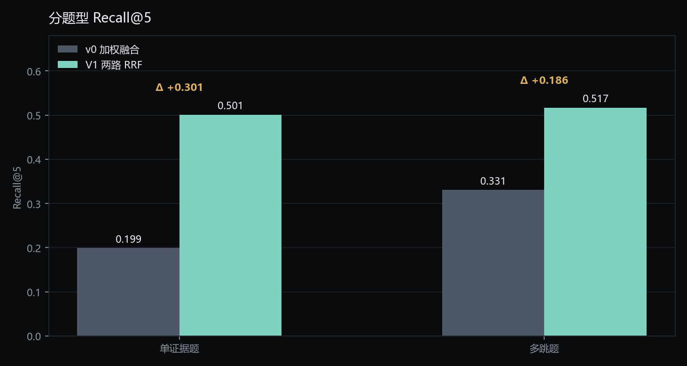
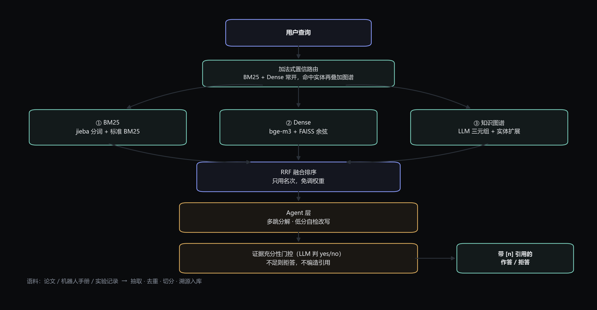
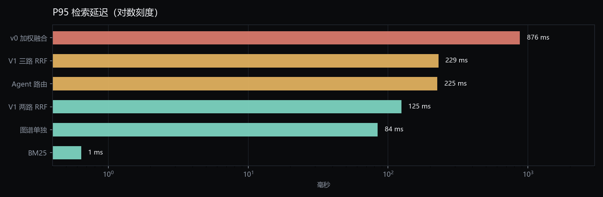
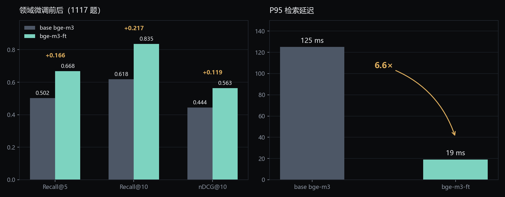
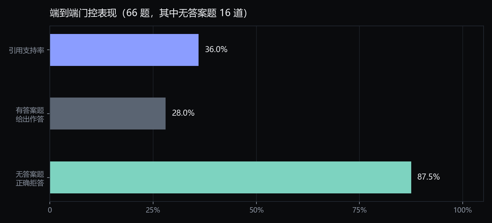
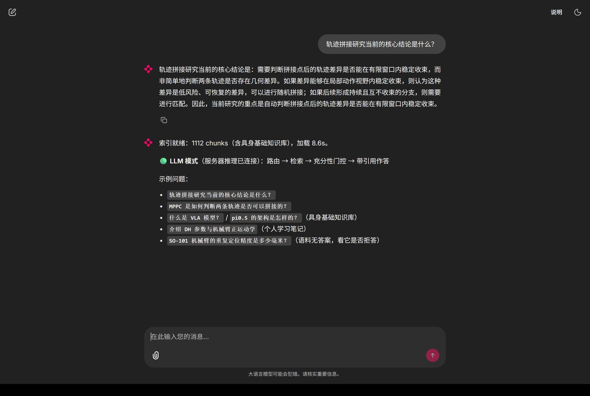

02指标对比
同一套 1117 题核验集上，六种方案的检索质量。两路 RRF 相比 v0 把 Recall@5 从 0.206 提到 0.502。


在完全离线、不依赖真机与外部 API 的条件下，对论文、机器人手册、实验记录做可溯源的检索作答。 BM25、稠密向量与知识图谱三路召回，RRF 融合，再由证据充分性门控决定是否作答。
一次查询经过路由、三路召回、融合、Agent 层处理，最后被门控决定「回答还是拒答」。

同一套 1117 题核验集上，六种方案的检索质量。两路 RRF 相比 v0 把 Recall@5 从 0.206 提到 0.502。

融合会让排序变好，但通常也意味着更多计算。这里的关键是：排序质量与延迟可以同时改善。

用合成 QA 对 bge-m3 做对比学习微调（MNRL + 批内负例，2 epoch），这是全项目最大的单项增益。

# 微调核心：批内其他 query 的正例即作为负例
model = SentenceTransformer("BAAI/bge-m3", device="cuda")
loss = losses.MultipleNegativesRankingLoss(model)
model.fit(train_objectives=[(loader, loss)], epochs=2,
warmup_steps=warmup, optimizer_params={"lr": 2e-5})端到端 66 题（其中 16 道无答案），检验「不知道就拒答」这件事是否真的做到。

拒答样本仅 72 条、接受样本 973 条，信号被完全淹没。三轮 DPO 后拒答率始终为 0，改为门控后一次到位。
判定器对已召回 gold 的题约有 39% 误拒。改进方向是更强的判定器，或判定与生成用不同模型。
系统带一个问答式演示界面（Chainlit）：回答带编号引用，右侧证据卡片可展开原文与来源。 支持离线抽取与服务器 LLM 两种模式，后者走完整链路——路由 → 检索 → 低置信改写 → 证据充分性门控 → 带引用作答。

retrievers_v1.py 实现 BM25 与 bge-m3 + FAISS；graph_v2.py 负责实体归一化与一跳邻居扩展。
agent.py 含规则路由、多跳拆分、低分自检改写与证据充分性门控，纯标准库实现。
metrics.py 覆盖 Recall / Precision / MRR / nDCG / 引用支持率；65 个用例，实测 62 passed。
api.py 暴露 /health /retrieve /answer，无语料时返回明确提示而非崩溃。